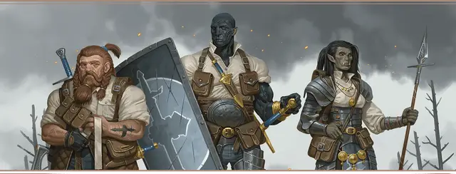

Рыцарь Латной перчатки
Knight of the Gauntlet

Характеристики Сила, Интеллект, Мудрость
Черта Новичок Латной перчатки
Навыки Атлетика, Медицина
Инструменты Инструменты кузнеца
Снаряжение Выберите А или Б: (А) Копьё, Инструменты кузнеца, Направленный фонарь, Священный символ, Кандалы, 5 фляг Масла, Трутница, Дорожная одежда и 9 ЗМ; или (Б) 50 ЗМ
Не все из тех, кого призывают высшие силы, довольствуются корпением над писаниями в душных апсидах храмов: вы выбрали путь воина света и присоединились к Ордену латной перчатки. Вы разделяете с другими рыцарями Ордена праведное презрение к силам зла, непоколебимое товарищество братьев по оружию и сердечное сочувствие тем, кто прошёл через войну. Держа в руках меч и священный символ, вы поклялись, что не будете знать отдыха, пока свет правосудия не рассеет тени хаоса над землями Фаэруна.